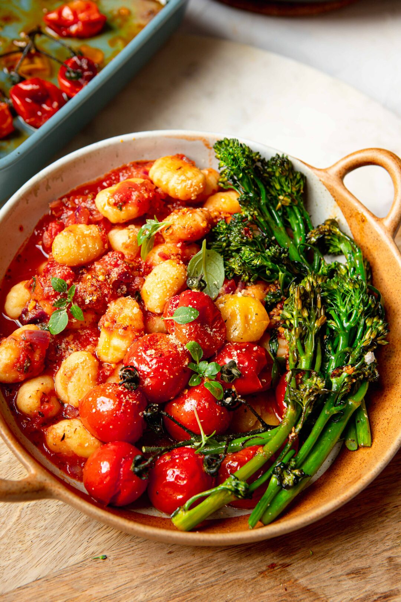

Gnocchi with slow roasted tomatoes

Here's an amazing variation of this already incredible recipe. When you give it a try, gonna see heaven.
Ingredients
- 1 tbsp olive oil
- 250 g vine tomatoes with a pinch of salt
- 400 g tinned chopped tomatoes
- 1 red onion finely chopped
- 3 cloves garlic or 1 tsp garlic powder
- 1/2 tsp dried sage
- 1/2 tsp dried oregano
- 1/2 tsp Marjoram, can be swapped for thyme
- 1 tbsp chilli oil, can be swapped for 1 tbsp harissa
- 1 tbsp chopped fresh basil
- 250g gnocchi
- 5-6 tenderstem, can use green beans, broccoli, kale or even spinach
Steps
- Whack the oven up to 200ºC, add the vine tomatoes with a bit of olive oil in a roasting dish, season with salt and pop in the oven for 20 minutes
- Finely chop the red onion, add to a deep frying pan with a glug of olive oil and fry for around 4 minutes, add the tinned tomatoes along with all of the, garlic, herbs and fresh basil and chilli oil
- Fill up the empty tin of tomatoes 1/2 full with water and add to the pot, stir and simmer for for 10 minutes, add in 1 tsp of chilli oil (or harissa) then add the gnocchi for the final 5 minutes of cooking
- Once the tomatoes are bursting, add the tenderstem, coat in either 1tsp of olive oil or chilli oil and pop back in the oven for 5-6 minutes
- Bring everything together by plating up, season with salt & pepper and enjoy